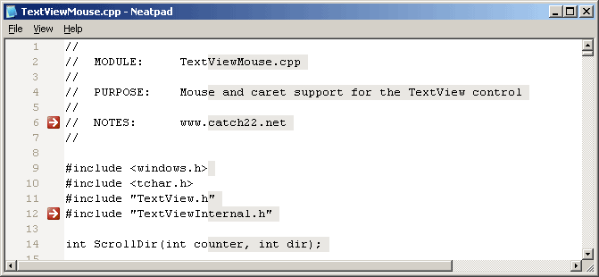
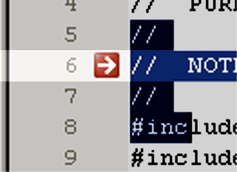
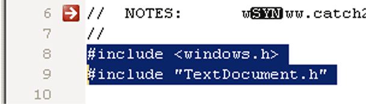

Margins and Long Lines
マージンの実装は非常に簡単なので、今回はかなり短いチュートリアルになるでしょう。今回は、選択マージン（全行選択が可能）、行番号、行表示アイコン（Visual Studioのブレイクポイントのビットマップのようなもの）、そして最後に長文表示の問題について説明します。

Drawing a margin
メインのスクリーンショットでは、Neatpadに選択マージン、ラインナンバー、ビットマップされたブックマーク、ロングラインハイライトが表示されています。マージンを描くのはとても複雑に見えますが、ディスプレイの左側にある長方形の領域で、描画やスクロールの仕方が異なるだけだと理解していれば、とても簡単です。

上の絵を強調したのは、垂直方向のマージンを追加しても、線は一本ずつ水平方向に描かれることを示しています。しかし、線を引く処理（TextView::PaintLine関数）は、余白を考慮して変更されています。
まず最初に、新しい関数TextView::PaintMarginを使ってマージンを描きます。
int TextView::PaintMargin(HDC hdc, ULONG nLineNo, RECT *margin)
そして、余白で囲まれた部分は、その上に何かが描かれないようにクリップされます。次に、テキストを通常通りに描画しますが、マージンの右側にオフセットします。クリッピングが重要なのは、水平方向にスクロールしたときに、テキストの行が余白をはみ出して、余白の向こう側に「消えて」しまわないようにするためです。基本的には次のような処理を行います。
void TextView::PaintLine(HDC hdc, ULONG nLineNo)
{
RECT rect;
// work out where to draw the line// handle the margins
if(LeftMarginWidth() > 0)
{
RECT margin; // work out the margin coordinates
// paint the margin
PaintMargin(hdc, nLineNo, &margin);
// clip the margin so the text doesn't draw over it
ExcludeClipRect(hdc, margin.left, margin.top, margin.right, margin.bottom);
// offset the text placement
rect.left += LeftMarginWidth();
}
// paint the text as normal
PaintText(hdc, nLineNo, &rect);
}
理解すべきポイントは、マージンを考慮して、通常のラインテキストを右にオフセットする必要があることです。とても簡単なので、ダウンロードしたソースコードを見て、実際に動かしてみてください。
さらに重要なことを2つ挙げておきます。メインテキストがスクロールされたときにマージンがスクロールされないように、スクロールルーチンを修正する必要がありました。これは非常に簡単で、ScrollWindowEx で指定したクリッピング レクタングルを調整するだけで、マージンが含まれないようになります。
HRGN TextView::ScrollRgn(int dx, int dy, bool fReturnUpdateRgn)
{
...
// take margin into account
clip.left += LeftMarginWidth();
...
}
もう一つの修正点は、マウス入力（選択）のコードです。カーソルの位置を調整して、再び余白を考慮しなければなりません。もうお分かりのことと思いますが、このためのコードは省略します。基本的には、入力や描画が行われる前に、x座標が余白の大きさ分だけ右に移動します。
Line bitmaps
ラインインジケーターのビットマップについて簡単に説明します。TextViewクラスに新しいImageListメンバ変数を追加し、ユーザが指定したビットマップのコレクションを保持できるようにしました。
HIMAGELIST m_hImageList;
イメージリストは、新しいTextView TXM_SETIMAGELISTメッセージ（またはTextView_SetImageListマクロ）を使って設定できます。
HIMAGELIST hImageList = ImageList_LoadImage(...);
TextView_SetImageList(hwndTextView, hImageList);
イメージリストは、ビットマップのメモリを管理し、描画もサポートしているので、ビットマップの保存や描画がとても簡単にできます。
難しいのは、一本一本の線を引くときです。余白部分にどのような画像を配置すべきか、どうやって知ることができるでしょうか？行の配列やリンクされたリストを使用するテキストエディタでは、これはとても簡単です。しかし、私たちのNeatpadのデザインでは、これは不可能です。なぜなら、いつかは大容量ファイルの編集をサポートしなければならず、4GBのファイルのためにラインバッファを持つことは、良いアイデアではないからです。
このため、ビットマップが関連付けられている行のみを保持する別の配列を使用しています。この配列は常にソートされているので、バイナリサーチを使って特定の行にビットマップが割り当てられているかどうかをすぐに判断することができます。
typedef struct
{
ULONG nLineNo;
ULONG nImageIdx;
} LINEINFO;LINEINFO m_LineInfo[MAX_LINE_INFO];
線が描画されるたびに、TextView::GetLineInfo関数を使ってLINEINFO配列が検索されます。
LINEINFO* TextView::GetLineInfo(ULONG nLineNo)
{
LINEINFO key = { nLineNo, 0 };
// perform the binary search
return (LINEINFO *) bsearch(
&key,
m_LineInfo,
m_nLineInfoCount,
sizeof(LINEINFO),
(COMPAREPROC)CompareLineInfo
);
}
この関数は、成功した場合は適切なLINEINFO構造体へのポインタを返し、指定された行の情報が保存されていない場合はNULLを返します。
行全体のハイライトカラー、ブックマーク、注釈など、行に関するより多くの情報を保存できると考えています。しかし、現時点では、画像インデックスのサポートを含めました。各行の画像は、もう一つの新しいTextViewメッセージ、TXM_SETLINEIMAGEを使って設定できます。
TextView_SetLineImage(hwndTextView, nLineNo, nImageIdx);
Line-selection and mouse input
メインのテキスト表示の左側に余白ができたので、この部分を使って行単位の選択を行うことができます。

このようなラインベースの選択方法を可能にするためには、選択を行っているという事実だけでなく、それ以外の情報も記録しておく必要があります。これまでのm_fSelectionというブーリアン（選択中かどうかを示すためだけに使われていた）は、新しい変数に置き換えられました。
SELMODE m_nSelectionMode;
m_nSelectionModeは、以下の値を持つSELMODE列挙体です。
enum SELMODE
{
SELMODE_NONE,
SELMODE_NORMAL,
SELMODE_MARGIN
};
現時点では、「通常」と「マージン」の2種類の選択をサポートしています。将来的には、列やブロックの選択など、他のタイプの選択をサポートするように拡張することができるでしょう。もちろん、新しいタイプの選択を理解するために、マウスのルーチンも変更されています。
Highlighting long lines
私が特に便利だと思う機能は、長い行の強調表示です。Windows 3.1用のBorland C++ 4.0 IDEでは、80列目の位置を示すために1本の縦線の余白が表示されていたのを今でも覚えています。これはちょっとダサいと思いましたが、同じような効果を出したいと思いました。
長い行をハイライトする理由は、テキストの行が長くなりすぎたときに、ユーザーにそれを示す方法を提供するためです。これは、印刷時にテキストが「折り返される」ことを嫌うプログラマーにとって最も便利な機能で、すべてのテキスト行を一定の制限内に収めることを目的としています。
ロングラインハイライトの導入方法は、基本的に2通りあります。
- 2段階のアプローチを使用します。最初の段階では、左側の「通常の」テキストと右側の「切り取られた」テキストを区別するために、2つの色を使って背景を準備します。例えば、一定の大きさの領域を、（例えば）列位置80までの通常の背景色で塗りつぶします。それ以降の背景は別の色で塗りつぶされるか、または縦線が引かれて長さの限界を示します。
そして、この背景の上に、背景が透けて見えるように、透明モードでテキストが描画されます。これは、テキストの描画が長い線のディスプレイから独立しているため、まさに「ピクセルベース」のアプローチです。
- もう一つの方法は、80列目以降に描かれた文字の背景色を単純に変更することです。これは、Scintillaのテキストエディタコンポーネントがやっていることで、上記の方法よりもはるかにシンプルです。
この新しい長蛇の列表示をサポートするために、TextView::ApplyTextAttributesメンバ関数に新しいパラメータである&nColumnを追加する必要がありました。
int TextView::ApplyTextAttributes(ULONG nLineNo, ULONG nOffset, ULONG &nColumn, TCHAR *szText, int nTextLen, ATTR *attr)
nColumn は C++ の参照であることに注意してください。これは、現在の列位置を追跡するために、ApplyTextAttributesによって継続的に更新されます（連続した呼び出しで値が保持されるように、C++参照が必要です）。nColumn が特定の値に達すると、ApplyTextAttributes はテキストに異なるデフォルトの背景色を使用します。
TextViewに新しいメッセージ(TXM_SETLONGLINE)が追加され、プログラムで長文の制限を変更できるようになりました。TextView_SetLongLineを使ってこの値を設定することができます。
TextView_SetLongLine(hwndTextView, 80);
64bit support
これは少し遅かったかもしれませんが（1日目から実施すべきでした）、NeatpadとTextViewのプロジェクトを64ビット互換にし始めました。そのため、新しい32bit/64bit混在の定義を得るためには、Neatpadをコンパイルする際に、最新のPlatform SDKを使用する必要があります。これに伴い、これまでに以下のような変更がありました。
- Get/SetWindowLong は Get/SetWindowLongPtr に変更されました。
これらの変更が実際に機能するかどうかを確認するために、IA64アーキテクチャ用のMicrosoft 64bitコンパイラを使用してプロジェクトをコンパイルしました。以下の手順で再現してみてください。
- Neatpadプロジェクトをmakefileとしてエクスポートする：Project -> Export Makefile
- スタートメニューの「Microsoft Platform SDK」→「Windows XP 64bit Build Environment」から、Platform SDK 64bitのビルド環境を開きます。
- Neatpadプロジェクトのディレクトリに移動し、Neatpad.mak\Neatpad07\Neatpadを開きます。
- LINK32_FLAGSを変更し、/machineスイッチが "I386 "ではなく "IA64 "になるようにし、ODBC32.LIBとODBCCP32.LIBへの参照を削除します。
- Neatpadプロジェクトが "クリーン "になっていることを確認し、64ビットツールを使ってビルドします： nmake Neatpad.mak
まだ多くの変更点があり（ULONGとULONG64の問題）、現在64ビットのマシンにアクセスできないので、きちんとテストできるようになるまでこれ以上の変更はできません。しかし、このシリーズが終わるまでには、Neatpadを完全に64ビット対応にしたいと思っています。
Conclusion
このチュートリアルは少し脱線してしまいました。マージンやロングラインハイライトはテキストエディタのデザインとしてはそれほど重要ではありません。いずれにしても、コアな機能に集中するために、この問題を解決しておきたかったのです。
パート8では、UTF-8とUnicodeのサポートを予定しています。